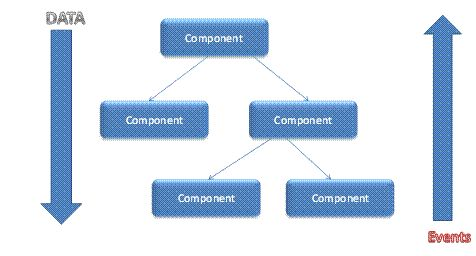

ReactJS, or simpllt Reacr is an open-source jaasscriopt Library that is used to build user interfaces for single page appplications. It used to handle the view layer for weba nd meobile applications, nad it allows for creating reusable user interfaces components.
React was first developed by Jordan Walke, while he was working as a software engineer for Facebook.
React allows for developers to create large web applications that handle changes in data without reloading the webpage. The advantages of React allows it to fast, scalable, and simple
Important features of React that will get covered:
- JSX
- React Nodes
- React Components
- React Component Props
- react Component State
- Single-Way data flow
- Virtual Document Object Modal (DOM)
What should be known before starting
This guide is to provide a general overview for how React works. React does require familiarity with HTML and JavScript
A few programming concepts that one should be familiar with are:
- Functions
- Objects
- Arrays
- Classes
While it is not required, it recommended to be familiar with ES6 concepts such the following:
- Arrow functions
- Classes
- Let statements
- Const statements
JSX is an XML/HTML-like syntax that is used by React that allows for HTML-like strtuctures
( e.g DOM like tree strctures) to be written as JavaScript. A transpiler like Babel will turn these expressions into actual JavaScript code. This allows for putting HTML into JavaScript
Here is an example of JSX:
JSX allows for a concise syntax for defining a tree structure with attributes that does not require a new language. JSX is easier to read over larger pyramids of Javscript function calls or object literals and help with defining user interfaces.
A React can be simply described as a light, stateless, immutable, virtual representation of a DOM node
These React Nodes are not real DOM nodes, such as text or elemnt nodes, but are representations of a potential DOM node. This representation is considerd the virtual DOM.
React can define a virtual DOM with React nodes that can eventually be used to create a real DOM structure, like with React Native. React Node can be created using both javascript or JSX
To create a React Node using JavaScript, simpliy use the React.createElement(type,props,children) function
The React.createElement() arguments can be explained as follows:
- type(string|
React.createClass()): can be either a string that represents an HTML element of a React component instance (i.e, instance of React.createClass())
- props(null| object): can be
null or an object containing attributes/props and values
- children (null|string|
React.createClass()|React.createElement()): can be null, a string to be turned into a text node, or an instance of either React.createClass() or React.createElement()
A React Component is any part of the User Interface that can contain React nodes, either
through a React.createElement() or JSX.
React components are the programmic abstraction (e.g User interfaces, state changes, DOM Changes). A good example is where a lot of applications user interfaces have a
layout component as a top componet. Then this components will have further sub-components, like a search bar or menu list. These subcomponets can be further broken down into subcomponents.
Component props provide configuration values for a component and they function similarly to HTML attributes. These can be also thought of as the configuration values that are sent to a component
every react component instance property called props that beings as an empty JavaScript object. This empty object can be later filled by a parent component. The value(s) can by used by that component or passed on to child components.
In short component states are used to store information about the component that can change over time. These changes can come as a result of user or system events, such as a response to user input, a server request or time lapse.
According to React documentation a state should:
Contain data that a component's event handlers may change to trigger a UI update
A few thing to remember about Raeact component states:
- A component with a default state should be provided with
getInitialState()
- States changes are usually how to start the re-rendering of a component and all subcomponents
- To make a state change of a component use
this.setState()
- State changes merges new data with old that is alreadty in the state
- You shouls never have to call
this.render() directly when doing a state change
- State objects shoule contain only relevent data for the User Interface
Similiarities of React components states and props.
Similiarities:
- Javascript objects
- hae default values
- Both can be accessed via
this.props or this.state
(Some)Differences:
- Props are passes into a component from either a parent compoent or the starting scope of React rendering.
- Props are intended as configuration values passed into the component, like agruments into a function
- State is a serializable representation of data that is typically tied to the user Interface
- State components can only be mutated by the component that contains that state.
Note: State should be avoided if possible, since stateful components add complexity to an application in how data is handle with various sub-components.
Unidirectional data flow in React
When designing a React app you can nest child components into higher-order parent components. The parent component(s) will have the state component for your app. The parent component will typcially pass down a snpshot of it state to a child component through props and the child
component will communicate with the parent to update the sate via callbacks.
The parent compoent is responsible for storing the state of an app and then passes it to the child component where a function is passes a function and brings the result back to the parent component. The img below provides a decent representation of what happens.

Virtual Document Object Model (DOM)
Another feature of React is that is create an in-memory data strucutre cache which computes changes and updates made to the browser. This allows for developers to take notice of changes to the web page as the actual changes occur.
Here are some examples of websites built with React:
Resources for further reading
Here are additional resources to learn more about React